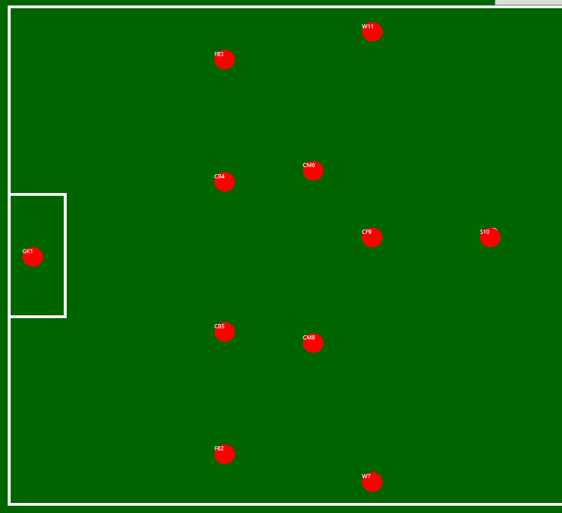

Matthew Hamilton

Resume
Technological Proficiencies
- C#
- Java
- Object Oriented Programming
- Web Programming using HTML, CSS and JavaScript
Work Experience
WeBuyBooks, Rawtenstall UK
Position: Picker
In this position, I worked to use resources at my disposal to speed up the time between an order being placed and the delivery being sent to the customer. I would work with 300+ orders per day, and would help my colleages with theirs.
Rawtenstall Market, Rawtenstall UK
Position: Cashier, Kitchen Porter
At Rawtenstall Market, I worked under pressure to ensure that chefs were well prepared and act as the main point of connection between the customer and the kitchen. I also learned how to effectively communicate, especially in busy times, to ensure everything was completed to a high standard.
Education Experience
- High School : Bury Grammar School, UK
- Sixth Form : Bury Grammar Sixth Form, UK
- College Current : Rose-Hulman Institute of Technology, Indiana
Projects
Soccer Simulator

This project involved using object-oriented C# code to make a simulator of a full soccer game. It uses inheritance to help achieve this purpose.